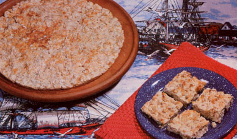

Gail E. Johnson passes along hertime-tested recipes for...
A childhood ration of seafaring tales many of whichdescribed long voyages endured on a diet of hardtack-left me withambivalent feelings about the long-time staple food. It was apleasant surprise, then, to discover an old Swedish recipe that'sboth fast and easy . . . and produces delicious hardtack as well.What's more, one batch will make eight 12-inch-diameter discswhich are great served "hot from the pan" with butter and makevery convenient snacks to enjoy while camping or backpacking,too.
PLAIN OL' HARDTACK
To make a basic hardtack,mix 2-1/2 cups of old-fashioned oatmeal, 3 cups of unbleachedflour, 1-112 teaspoons of salt, and 1 teaspoon of baking soda ina large bowl. Then, in a separate container, add 11/2 cups ofbuttermilk (or soured powdered milk mix) and 3 tablespoons ofhoney to 1/2 cup plus 2 tablespoons of melted bacon or sausagedrippings . . . and combine this mixture with the dryingredients. When the dough is thoroughly mixed, form it Intoeight balls of equal size and roll each one out on a flouredboard (the thickness will depend on the size of your pans). Use apegged rolling pin if such a (tool is available . . . if not, astandard rolling pin, jar, or large drinking glass will do. '
Transfer each circle to a lightly greased pizza pan, and pat andsmooth the dough to fit. A meat tenderizing tool can be used tostipple-or dent-a pattern in the surface at this point if apegged rolling pin wasn't used ... and you can mark the "pie"into squares, diamonds, or triangles with a regular pizza cutter,if desired.
Put the pans in the oven for 5-1/2 minutes at450°F. Timing is crucial: The resulting "way bread" should bedry, but browned only around the edges.
When you remove yourfinished hardtack from the oven, let it stand for a moment .. .then use a pancake turner to place the discs on wire racks tocool, and put your next batch on the pans. (The pizza sheets willnot need to be regreased to bake subsequent discs of dough.)
Finally, the hearty flatbreads should be stored in tightlycovered containers to keep them crisp.
RYE ORWHOLE WHEAT HARDTACK
Substitute 2 cupsof rye flour-or 2 cups of whole wheat flour-for 1 cup of theoatmeal and 1 cup of the unbleached flour called for in the basicrecipe. You can please your taste buds with a variety of spices,too: Perhaps 1/2 teaspoon of garlic salt in the rye mixture or3/4 teaspoon of caraway seeds and 314 teaspoon of sesame seeds inthe whole wheat mix might produce a hardtack that your palatefinds particularly appealing.
BUCKWHEAT-MILLETHARDTACK
You might want to experiment by substituting 1cup of buckwheat groats (kasha) for 1 cup of the basic recipe'soats, and 1 cup of millet (uncooked) for 1 cup of the unbleachedflour . . . then adding 1/4 teaspoon more salt and spices asdesired. The result will be a bit moist, as millet doesn't absorbliquid. (If you'd like a drier bread, compensate by mixing in anadditional 112 cup of unbleached flour.)
SUNFLOWER NUTHARDTACK
For extra-crunchy hardtack, try using 1 cup ofsunflower seeds (chopped) instead of 1 cup of the oatmeal calledfor in the basic recipe. (You can make the same substitution inthe rye or whole wheat mixtures.)
CORNMEALHARDTACK
Replace 1 cup of the unbleached flour and 1 cupof the oatmeal included in the basic recipe with a total of 2cups of cornmeal. Or, if you're basing your conversion on the ryeor whole wheat variations, you can simply let 2 cups of cornmealreplace 1 cup of rye (or 1 cup of whole wheat) and one cup of theremaining unbleached flour.
Any way you mix it, you'll findhardtack - which was once the traditional army/ navy ration-to bea handy, hearty treat that's always nice to have around!
|
 |
|
|